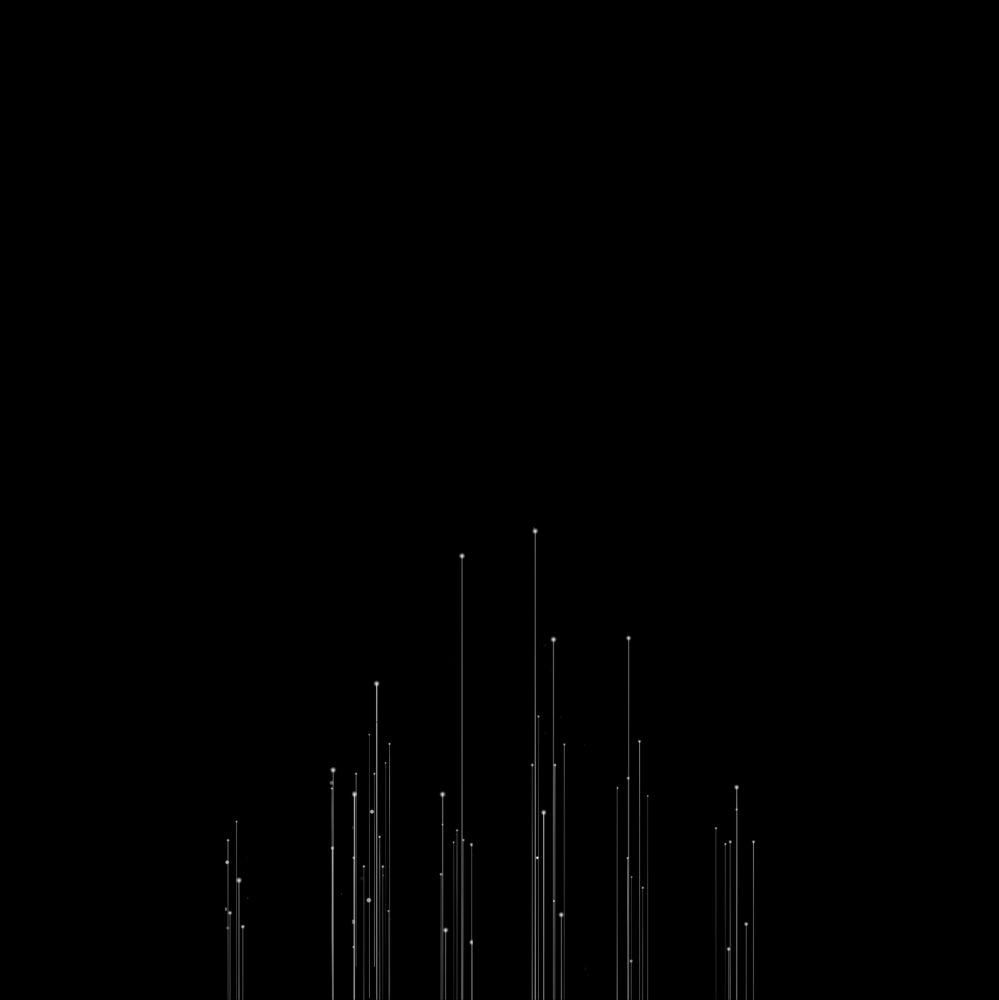
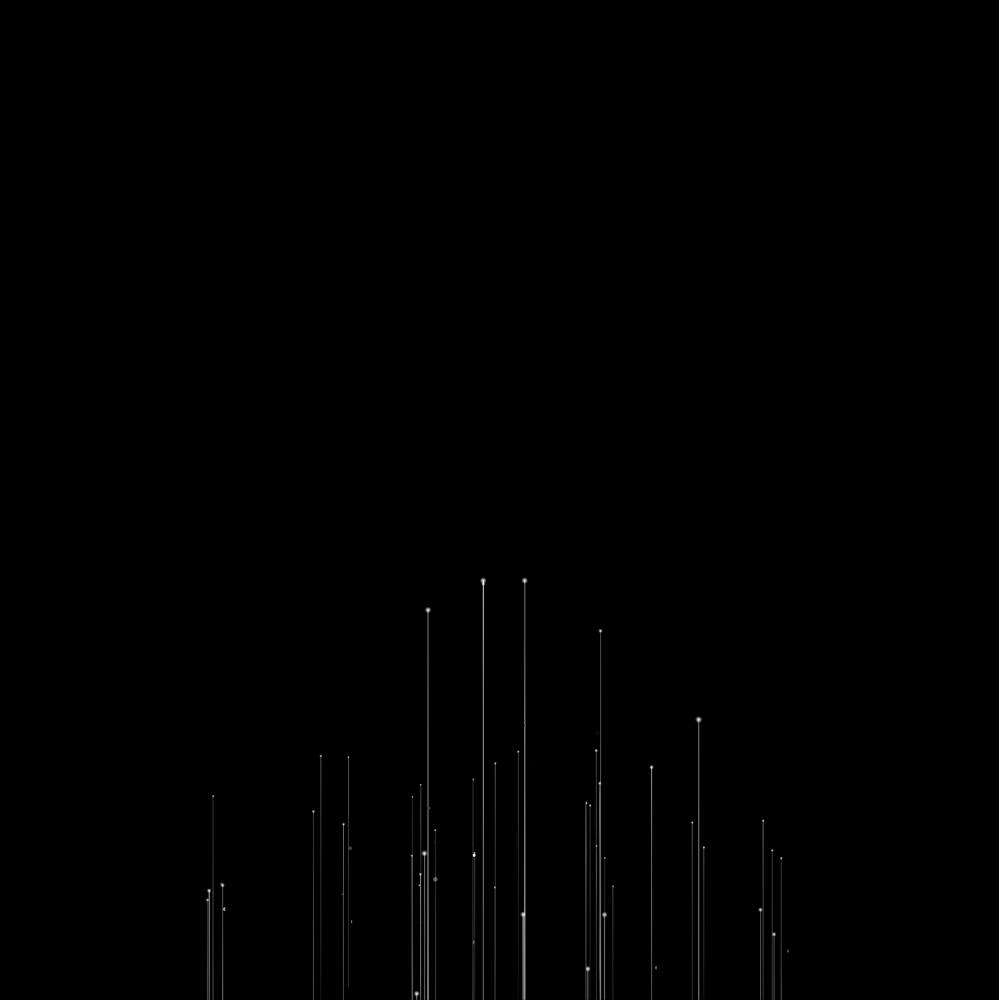

<!-- Header -->
<%- include('./_ejs/top.ejs', {
    url: "../"
}) %>

<!-- 레이아웃 -->
<div class="lytLayout main">
    <div class="layoutArea">

        <!-- 상단영역 -->
        <div class="layoutTop">
            <!-- Top -->
            <%- include('./_ejs/gnb.ejs', {
                url: "./"
            }) %>
        </div>
        <!-- //상단영역 -->

        <!-- 중단영역 -->
        <div class="layoutContainer" id="container" tabindex="-1">

            <!-- 메인 콘텐츠 영역 -->
            <div class="layoutMaincont">
                <div class="cptMain">
                    <div class="sectGroup scene01">
                        <dl class="mainCopy">
                            <dt class="tit">
                                <span class="text">Limitless Re.novation</span>
                            </dt>
                            <dd class="dec">
                                <span class="view03">오픈브릭스는</span>
                                <span class="view01">대한민국 IT 혁신의 시작</span>
                                <span class="view03">을 함께하며,</span>
                                <span class="view03">한계점에서</span>
                                <span class="view02">새로운 변화와 혁신</span>
                                <span class="view03">을 함께 만들어갑니다.</span>
                                <div class="back">오픈브릭스는<b> <br>대한민국 IT 혁신의 시작</b>을 함께하며, <br>
                                한계점에서 <b>새로운 변화와 혁신</b>을 함께<br> 만들어갑니다.</div>
                            </dd>
                        </dl>
                    </div>  
                    
                    <div class="sectGroup scene02">
                        <ul class="backGroup">
                            <!-- 20250722 수정 -->
                            <li class="backItem">
                                <div class="bg04"></div>
                                <div class="bg03"></div>
                                <div class="bg02"></div>
                                <div class="bg01"></div>
                            </li>
                            <li class="backItem">
                                <div class="bg01"></div>
                            </li>
                            <li class="backItem">
                                <div class="bg01"></div>
                            </li>
                            <li class="backItem">
                                <div class="bg03"></div>
                                <div class="bg02"></div>
                                <div class="bg01"></div>
                            </li>
                            <!-- //20250722 수정 -->
                        </ul>
                        <!--2026.06.04 추가 및 수정-->
                        
                        <div class="mainBnArea swiperContainer">
                            <div class="introTextArea">
                                <h1 class="mainTit">운영 가능한 시스템을 설계·구축·안정화까지 <br/>책임지는 전문화 SI 기업입니다.</h1>
                                <!-- <p class="desc">
                                    공공·금융·민간의 복잡한 업무와 데이터를 표준화해 안정적인 서비스 구조로 완성합니다. <br/>특히 대외기관/마이데이터 연계, 실시간·비동기 처리, 컨테이너 기반 운영까지 현장 중심으로 수행합니다.
                                </p> -->
                            </div>
                            <ul class="mainBn swiper-wrapper">
                                <li class="bnItem swiper-slide">
                                    <dl class="bnGroup">
                                        <dt class="bnTop">
                                            <i class="eyebrow">Service 01</i>
                                            <b class="tit">Cloud 플랫폼 인프라</b>
                                            <span class="titSub">Cloud platform Infrastructure</span>
                                        </dt>
                                        <dd class="bnCont">
                                            인프라부터 컨테이너 플랫폼, DevOps까지 표준화된 클라우드 플랫폼을 설계·구축하여 개발부터 운영까지 일관된 환경을 제공합니다.
                                        </dd>
                                    </dl>
                                    <a href="./service/cloud_infra.html" class="more">자세히 보기</a>
                                </li>
                                <li class="bnItem swiper-slide">
                                    <dl class="bnGroup">
                                        <dt class="bnTop">
                                            <i class="eyebrow">Service 02</i>
                                            <b class="tit">시스템구축 SI</b>
                                            <span class="titSub">System Integration</span>
                                        </dt>
                                        <dd class="bnCont">
                                            복잡한 업무와 시스템을 구조적으로 해석하고, 이를 분석·설계·아키텍처 중심의 최적화된 시스템으로 완벽히 구축합니다.
                                        </dd>
                                    </dl>
                                    <a href="./service/system_build.html" class="more">자세히 보기</a>
                                </li>
                                <li class="bnItem swiper-slide">
                                    <dl class="bnGroup">
                                        <dt class="bnTop">
                                            <i class="eyebrow">Service 03</i>
                                            <b class="tit">서비스연계 SBM</b>
                                            <span class="titSub">Service Integration (SBM-based)</span>
                                        </dt>
                                        <dd class="bnCont">
                                            단순 API 연계를 넘어, 채널/클라이언트-서비스-외부 연계 사이의 연결과 흐름을 운영 가능한 구조로 설계·구현하는 구축 서비스입니다.
                                        </dd>
                                    </dl>
                                    <a href="./service/serviceSbm.html" class="more">자세히 보기</a>
                                </li>
                                <li class="bnItem swiper-slide">
                                    <dl class="bnGroup">
                                        <dt class="bnTop">
                                            <i class="eyebrow">Service 04</i>
                                            <b class="tit">DevOps 및 서비스 운영</b>
                                            <span class="titSub">DevOps & Operations</span>
                                        </dt>
                                        <dd class="bnCont">
                                            소프트웨어 개발부터 운영, 유지보수까지 체계적인 프로세스로 품질 높은 서비스를 제공합니다.
                                        </dd>
                                    </dl>
                                    <a href="./service/devops.html" class="more">자세히 보기</a>
                                </li>
                                <li class="bnItem swiper-slide">
                                    <dl class="bnGroup">
                                        <dt class="bnTop">
                                            <i class="eyebrow">Service 05</i>
                                            <b class="tit">Cloud 기반 최적화</b>
                                            <span class="titSub">Cloud App Engineering</span>
                                        </dt>
                                        <dd class="bnCont">
                                            SBM을 이용해 소규모부터 대형 시스템까지 빠르고 안정적인 클라우드 네이티브 환경을 구축합니다.
                                        </dd>
                                    </dl>
                                    <a href="./service/cloude_base.html" class="more">자세히 보기</a>
                                </li>
                            </ul>
                            <div class="swiper-pagination"></div>
                        </div>
                    </div>  
                    <script>
                        document.addEventListener('DOMContentLoaded', function(){
                            introView(); //인트로부터 시작
                            // introSkip(); //인트로 생략
                        });
                    </script>
                </div>
            </div>
            <!-- //메인 콘텐츠 영역 -->

        </div>
        <!-- //중단영역 -->

    </div>
</div>


<!-- Bottom -->
<%- include('./_ejs/bottom.ejs', { }) %>